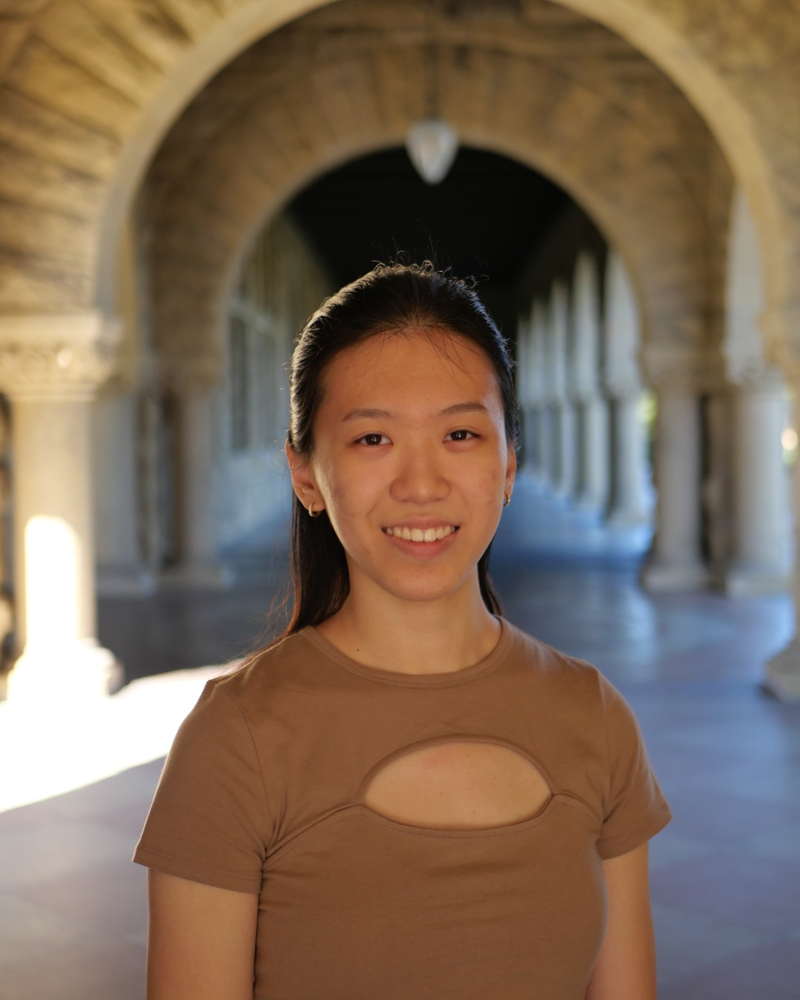
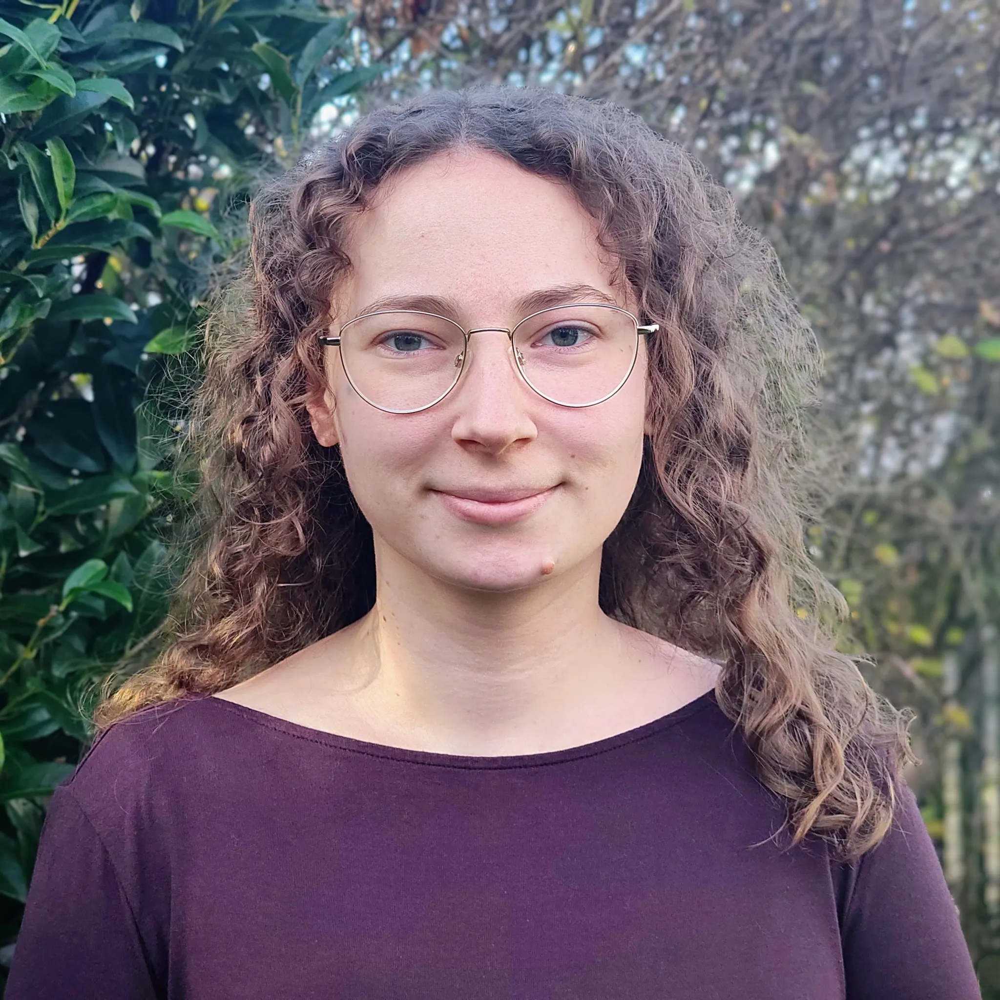

Complex long-horizon and sparse reward robotics tasks are challenging for scaling end-to-end learning methods. By contrast, planning approaches have shown great potential to handle such complex tasks effectively. One of the major criticisms of planning-based approaches has been the lack of availability of accurate world models (aka abstractions) to utilize.
There has been a renewed interest in using learning-based approaches to learn symbolic representations that support planning. However, this research is often fragmented into disjoint sub-communities such as task and motion planning, reinforcement learning (hierarchical, model-based), planning with formal logic, planning with natural language (language models), and neuro-symbolic AI. As in previous years, LEAP will bring together researchers from disparate subfields to discuss how we can combine learning, planning, and abstractions to solve increasingly complex long-horizon and sparse-reward robotics tasks.
As in prior editions, the workshop continues to engage with the foundational questions that have defined LEAP since its inception:
While the questions above ground the workshop, our key attention this year is deliberately focused on two specific, concrete, and timely challenges in learning abstractions for planning. We frame these as the focal discussion themes around which the program, panels, and breakout sessions will be organized.
Programs and code offer a uniquely powerful substrate for abstraction in robot planning. They are compositional, verifiable, reusable, and directly executable, and they interface naturally with modern foundation models that can read, write, and edit code. We are eager to explore and discuss when and how code is the right abstraction for robot decision-making, as well as to identify its limitations:
Learned world models promise abstractions of environment dynamics that can be searched, simulated, and planned over. We want to examine what makes a world model a good abstraction for planning (rather than merely for prediction), and how planning can be performed in, on top of, or adjacent to such models:
We solicit papers of the following topics:
We solicit workshop paper submissions relevant to the above call of the following types:
Please format submissions in CoRL or IEEE conference (ICRA or IROS) styles. Submissions do not need to be anonymized. To authors submitting papers rejected from other conferences: please ensure that comments given by the reviewers are addressed prior to submission.
Note: Please feel free to submit work under review or accepted for presentation at other workshops and/or conferences as we will not require copyright transfer.
The OpenReview submission portal for LEAP 2026 will be announced soon. Stay tuned!
Note: The CoRL workshop organizers have requested that we do not accept submissions that are already accepted at the main CoRL conference. We kindly ask authors to respect this policy when submitting to our workshop.
| Early Paper Submission Deadline | Sep 18, 2026 |
| Late Paper Submission Deadline | Oct 7, 2026 |
| Author Notification | To Be Announced |
| Camera-ready Version Due | To Be Announced |
| Workshop | Nov 12, 2026 |
Important dates for LEAP 2026 will be posted here soon. Please check back for the call for papers and submission deadlines.
The detailed schedule for LEAP 2026 will be announced closer to the workshop date.

